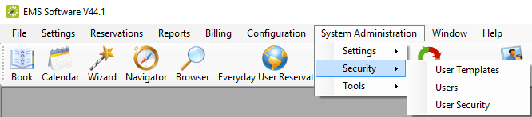

In addition to configuring core data items that are specific to your organization, you must configure settings that determine a variety of operational factors for your
You can access the security settings under System Administration > Security. The Security menu enables you to control security (what users have access to) through user templates (and processes, users, and user secruity.

Security Menu
The following topics provide information about the security configuration features found in System Administration:
You can fine-tune security by configuring actions users should be allowed to take, information they can see, and rooms and buildings they can book. We recommend you configure security for EMS in the following phases:
Configure Booking Templates (for instructions, see Configure Everyday User Templates)
Configure User Templates (and associate them with User Processes)
Configure Users (using User Templates as needed)
A user template defines the categories, processes, buildings, rooms, statuses, and queries to which a group of EMS users has access. Instead of defining users individually and then configuring security for each user, you can configure a template and then assign all the users who are to have the same security settings to a given template in a single step. You can configure a user template entirely from “scratch,” or you can copy an existing user template, and then make the necessary edits to configure another template.